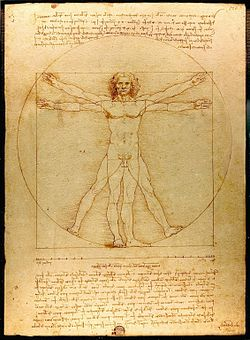
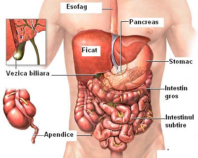
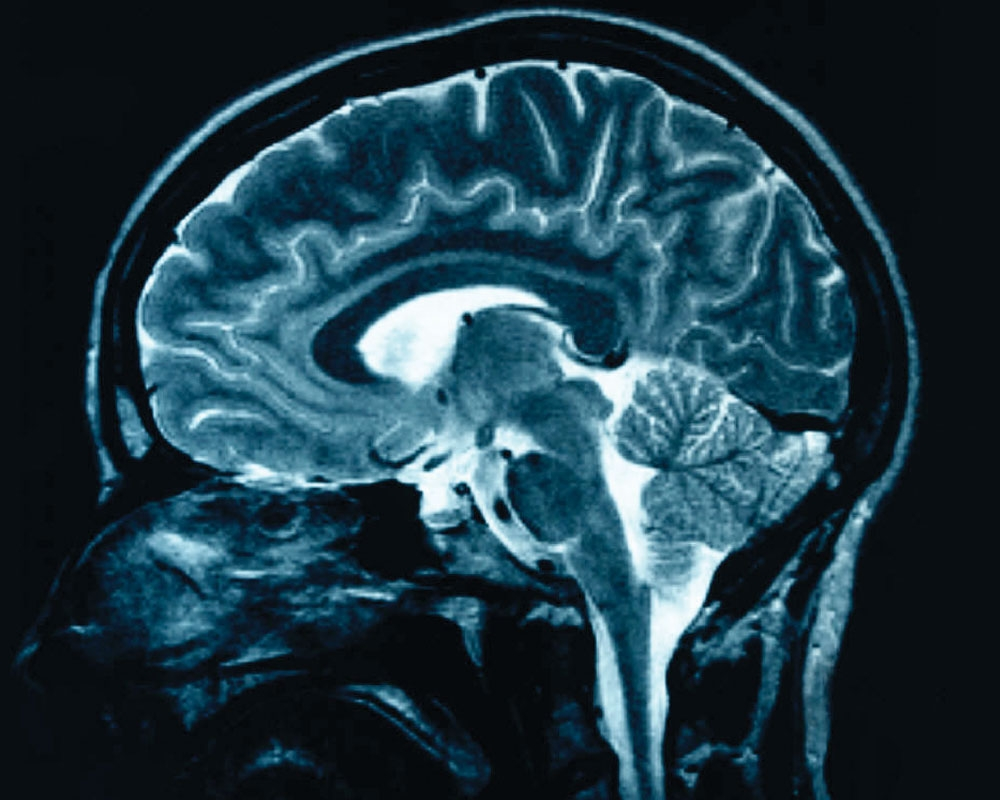

Istoria Anatomiei
|

|
Inceputurile anatomieiPrimele metode folosite in studiul anatomiei au fost simpla observare si descriere a organismelor, insotita obligatoriu de corelatii cu functiile diferitelor componente. Aplicatiile imediate ale cunostintelor dobandite astfel erau folosite de oameni pentru diferite scopuri: producerea obiectelor de imbracaminte, a armelor, a locuintelor; insa inca din cele mai vechi timpuri, aplicatia cea mai importanta si mai spectaculoasa a notiunilor de anatomie a fost cea medico-chirurgicala, la inceput concretizata in interventii simple ca hemostaze, aplicare de pansamente, sau chiar (dupa unii cercetatori) manevre mai complexe ca trepanatii. De altfel, dintre toate stiintele medicale, anatomia este poate cea mai veche, aparuta spontan si natural din simpla vizualizare a corpului uman sau a corpurilor animalelor. |
 |
AntichitateaHippocrate (460-375 i.H), considerat parintele medicinei, a folosit ca principala metoda observatia directa, si pe baza acesteia a formulat si sustinut teoria umorala care, desi falsa din punct de vedere stiintific, a avut marele merit de a pregati terenul Endocrinologiei moderne: "...omul este, ca destin, urmasul celor patru umori..." . Aristotel (384-322 i.H), tutorele si mentorul lui Alexandru cel Mare, a formulat primele notiuni de embriologie si de anatomie comparata, descriind embrionul de gaina si lichidul spermatic. In secolul II i.H, Galenus din Pergam, medicul lui Marcus Aurelius foloseste metoda disectiei experimentale, face prima clasificare sistematica a oaselor ?i articulatiilor, descrie duramater si piamater ai face unele referiri la alantoida, amnios si placenta . |
|

|
Perioada medievalaCu Galenus se incheie perioada de inflorire si de evolutie rapida a stiintelor medicale in spatiul european. Urmeaza aproximativ 14 secole de declin, corespunzatoare epocii de dominatie crestina si asanarii valorilor antichitatii. Orice tentativa de considerare a materialitatii fiintei umane este descurajata si se instaleaza domnia superstiilor si misticismului. Aceasta situatie a durat pana la sfarsitul Evului Mediu. Intre timp, epicentrul medicinei si implicit al anatomiei se muta in spatiul arab. Reprezentantul cel mai de seama al acestei perioade este Avicenna (980-1037), cu lucrarea sa "Canonul medicinei practice" ce va deveni cartea de capatai a multor intelepti europeni din perioada medievala. |

|
RenastereaIn perioada Renasterii, Leonardo da Vinci reia si amplifica studiul anatomiei. Desi contributiile sale sunt mai ales legate de anatomia artistica, acestea sunt extrem de valoroase. Da Vinci a realizat peste 750 de desene anatomice perfect valabile, folosindu-se si de cadavre. Fondatorul anatomiei moderne este Andreas Vesalius (1514-1564). El asaza anatomia pe noi temelii, elaboreaza metode de cercetare, descopera si descrie destul de corect vasele spermatice, descrie sistemul osteomuscular, circulatia venoasa, mezenterul, ovarul, face distinctia intre marea si mica circulatie. Reuseste sa detroneze cristalinul din postura de organ al receptiei vizuale, si descrie ligamentul inghinal. Opera sa principala este De Humani Corporis Fabrica (1453), o carte remarcabila, de aproximativ 600 de pagini, in 7 tomuri, cu peste 300 de ilustratii, care a dominat literatura de specialitate prea tarziu, in secolul XIX. |
|

|
Anatomia in Romania In perioada Renasterii, Leonardo da Vinci reia si amplifica studiul anatomiei. Desi contributiile sale sunt mai ales legate de anatomia artistica, acestea sunt extrem de valoroase. Da Vinci a realizat peste 750 de desene anatomice perfect valabile, folosindu-se si de cadavre.
In forma sa moderna, anatomia a inceput sa se dezvolte in Romania din secolul XIX, chiar daca cu destul de mult timp in urma, multi tineri romani studiasera medicina in Europa occidentala, unii chiar cu Vesalius. De Humani Corporis Fabrica a circulat pe teritoriul romanesc pana la inceputul secolului XX.
In 1843 Nicolae Kretzulescu publica, ajutat de Carol Davila, un Manual de anatomie descriptiva, in limba romana, dar cu caractere chirilice. In aceeasi perioada, in Transilvania si prin Banat se bucura de o larga circulatie Antropologhia sau scurta aratare despre om si insusirile sale, editata in 1830 la Buda, in limba romana, dar tot cu litere chirilice. In 1855, Carol Davila infiinteaza, cu concursul domnitorului Barbu Stirbey, scoala de mica chirurgie sau de felceri, de la Spitalul Ostirii. La Coltea, Carol Davila infiinteaza prima biblioteca medicala si un mic muzeu de anatomie. In 1869 Scoala de mica chirurgie devine scoala Nationala de Medicina si Farmacie cu sediul in localul Spitalului Militar Central. Mai tarziu se muta la Spitalul Coltea, unde existau sali spatioase de disectie si unde se va construi si un amfiteatru de anatomie. Thoma Ionescu (1860-1926) vine in 1865 la catedra de Anatomie topografica si chirurgie operatorie. El este primul anatomist roman autor al unor lucrari stiintifice apreciate pe plan international, ca:
Joseph Francisc Rainer (1874-1944), ce va avea sa fie profesor al eminentului George Emil Palade, activeaza la Catedra de Anatomie a Facultatii de Medicina din Iasi incepand cu anul 1913. In 1920 preia Catedra de Anatomie din Bucuresti, unde ramane pana in 1942. Are contributii extrem de importante in promovarea conceptului de anatomie functionala, cautand sa elimine descrierea rece si seaca, enumerarea notiunilor fara a tine seama de fiinta vie: ...idealul ar fi [...] sa studiem pe viu, sa surprindem forma in mersul ei spre realizare, nu in oprirea ei ireversibila. Se implica si in studii destul de complexe de antropologie fizica, satisfacandu-si astfel si pasiunea pentru fotografie si etnologie. Alcatuieste o valoroasa colectie de cranii si schelete umane complete, cea mai numeroasa din Europa acelor vremuri. Pune bazele Institului de Antropologie care astazi ii poarta numele (Centrul de Cercetari Antropologice "Francisc I. Rainer"). Descopera ganglionii limfatici subepicardici, observa resorb?ia cartilajului in cadrul osificarii, descrie tractul iliotibial si multe altele. |